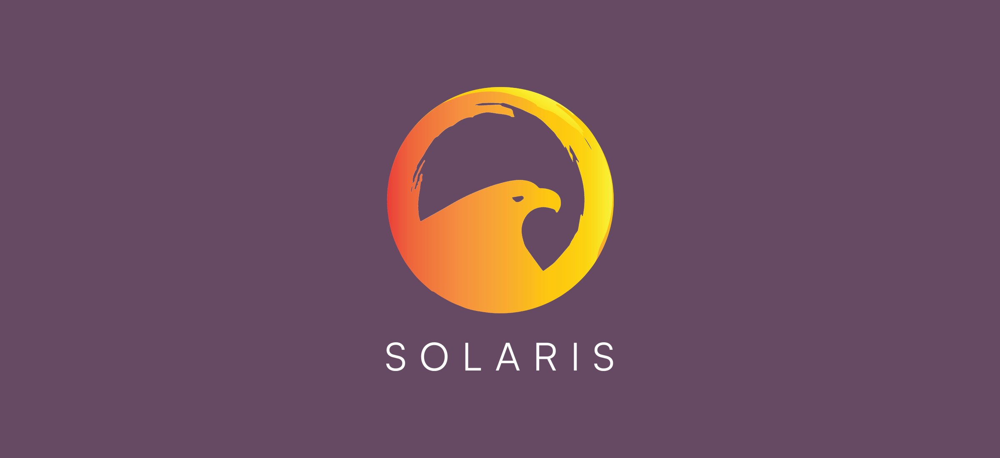
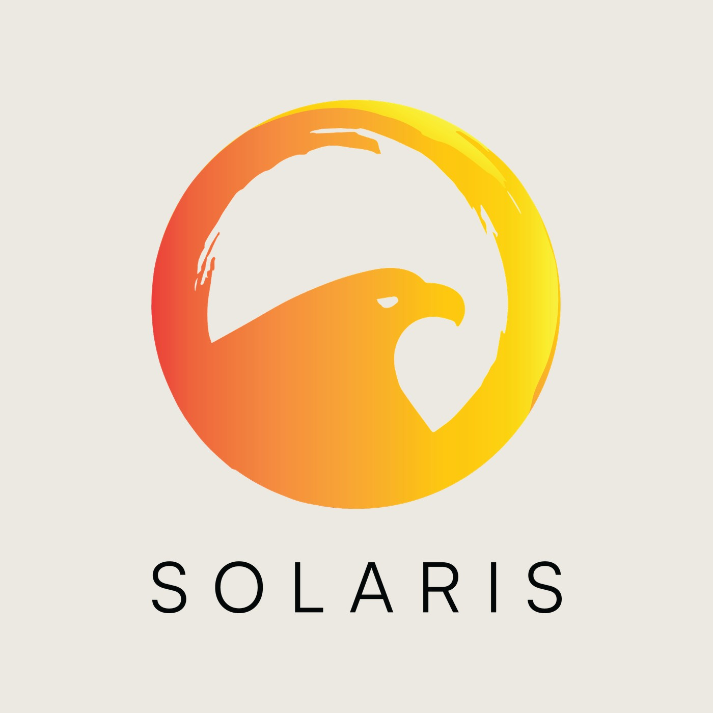
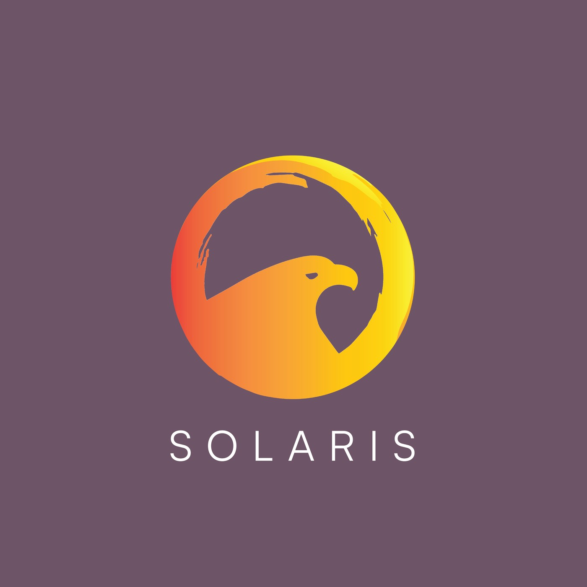
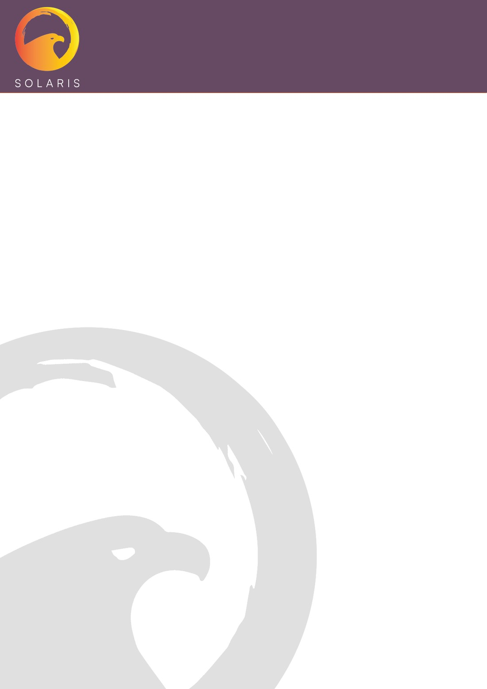
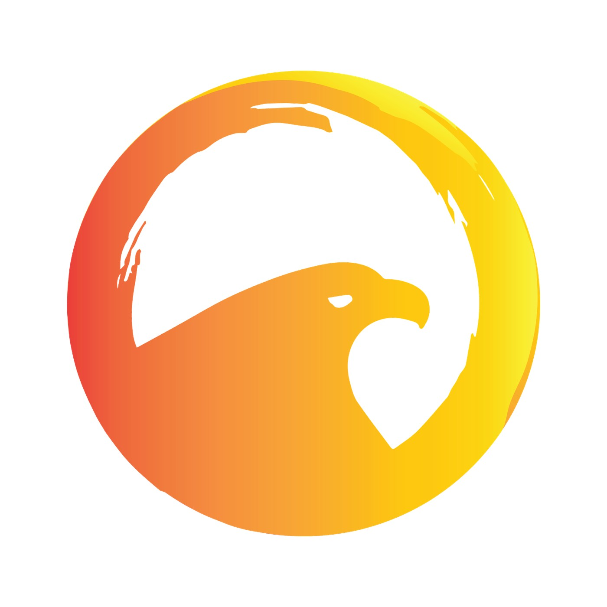
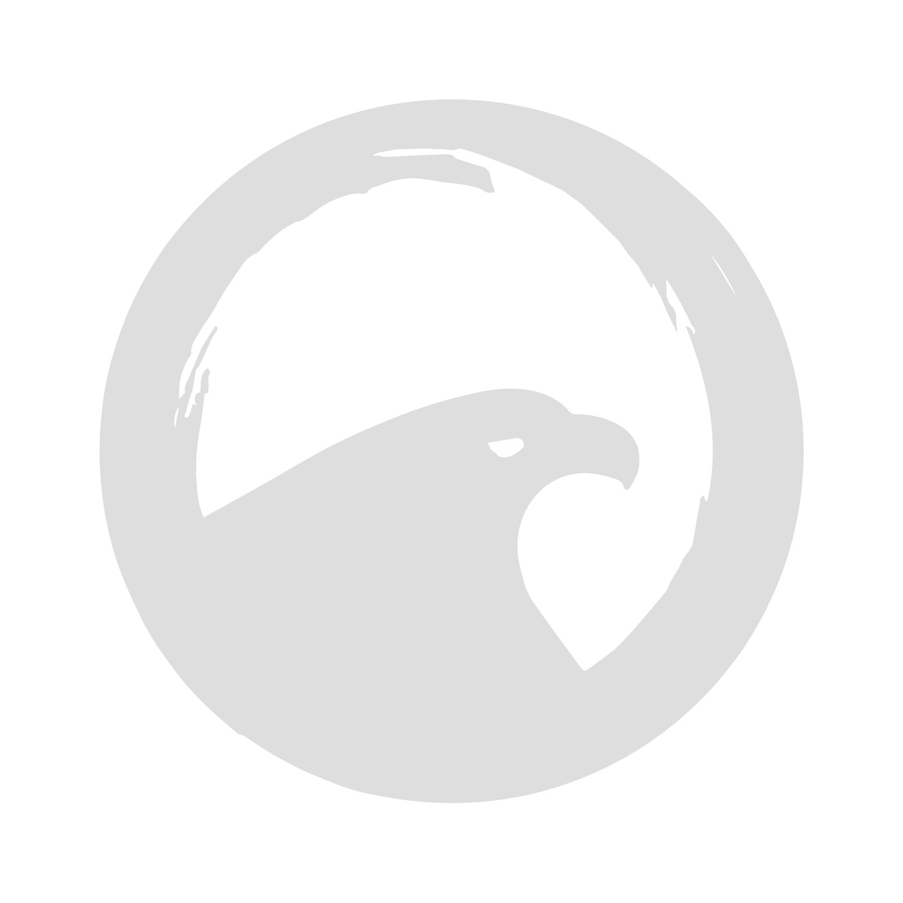
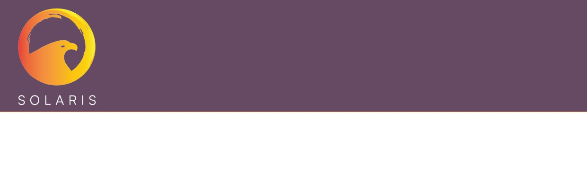

An identity for a biomedical company, built from one drawing — an eagle rising inside a brushed ring of sun, graded from red-orange to gold, over a wide-tracked SOLARIS wordmark. From that mark come a reversed lockup on plum, a tonal watermark, and a letterhead that carries both.

Solaris BioMed needed a mark and the stationery to carry it. The work is a single symbol: a ring painted with a dry, broken brush edge, left open at the top, and the head and shoulders of an eagle rising through its lower half. The ring is the sun the name asks for; the eagle gives it a face.
The rest of the identity is kept deliberately small — one wordmark, one dark ground, one tonal variant — so the symbol does the recognising and everything else stays out of its way.






A ring of light, left open — and something rising through it.
The gradient runs from red-orange at the left edge to gold at the right, so the disc reads as warm light rather than a flat badge. The brush edge keeps it hand-made; the eagle's silhouette is cut clean against it, which is what lets the symbol hold together when it shrinks to the corner of a page. The wordmark underneath is set in capitals with wide tracking, quiet enough to sit under a mark this strong.
The stationery takes two decisions from the mark. A plum header band holds the full-colour symbol and wordmark, closed off by a thin warm rule. Below it the page stays white, apart from the eagle again — enlarged, greyed to a watermark and cropped by the sheet's edge, so it is felt more than seen behind whatever is written on it.